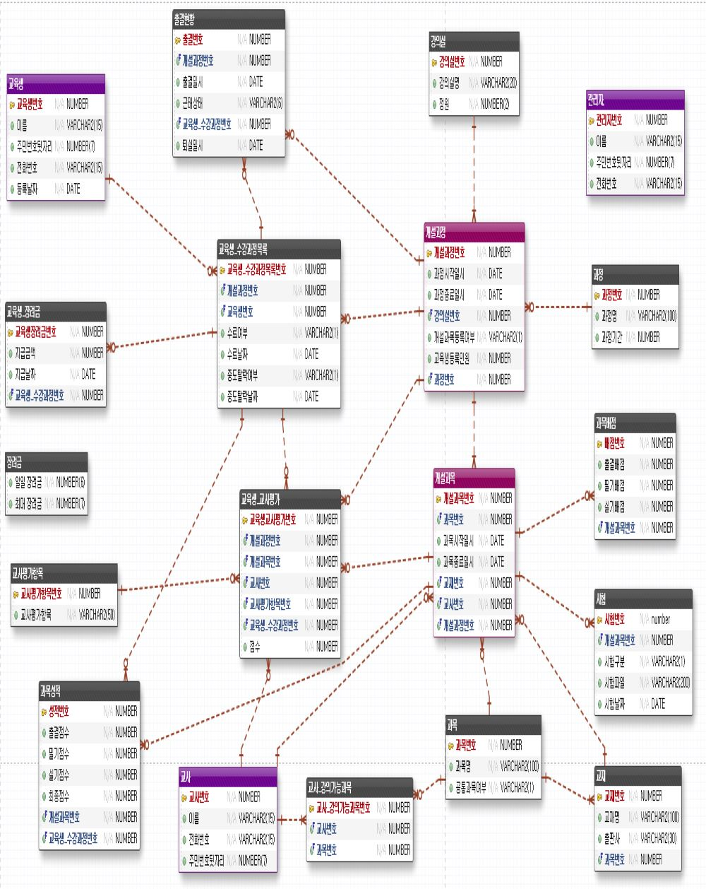
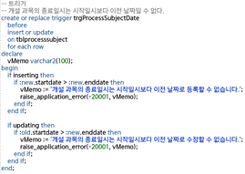
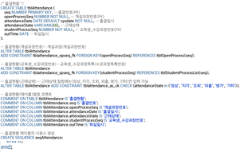

교육센터 운영 프로그램
Oracle 프로젝트 - 쌍용교육센터
2021.05.24 ~ 2021.06.04 (12일간)
| 장예지 | ERD, 테이블 생성, 프로시저 생성, 뷰 생성, 함수 생성, 트리거 생성, 인덱스 생성, 더미 데이터 생성, 기능 DML 구현 |
| 전수정 | 테이블 생성, 프로시저 생성, 뷰 생성, 함수 생성, 트리거 생성, 더미 데이터 생성, 기능 DML 구현 |
| 정병은 | 테이블 생성, 프로시저 생성, 뷰 생성, 함수 생성, 더미 데이터 생성, 기능 DML 구현 |
| 고혜선 | 테이블 생성, 프로시저 생성, 뷰 생성, 함수 생성, 트리거 생성, 더미 데이터 생성, 기능 DML 구현 |
이 프로젝트는 Oracle을 이용한 프로젝트입니다. 대학교에서는 DB에 관련된 모든 걸 mySql로 했었기에 오라클은 조금 생소하게 느껴졌으나 데이터베이스에 공통된 특성들이 많아 학습하기에 큰 어려움은 없었습니다.
‘교육센터 운영 프로그램’에 맞게 필요한 요구들을 분석한 요구분석서를 작성하였고 필요한 테이블과 컬럼들을 추출해 내 ERD를 그렸습니다. 논리적 ERD, 물리적 ERD 두개 다 작성하였는데 컬럼명을 짓는 것 만으로도 함께 진행하는 팀원들끼리 많은 소통이 필요하고 프로젝트 초기에 큰 규약부터, 세세한 규약까지 모두 정해두는 것이 일처리에 많은 도움이 되겠다는걸 느꼈습니다.
테이블의 관계를 맺는 부분에서 많은 회의를 진행하였는데 요구 분석이 제대로 되어있지 않고, 그 다음 ERD가 제대로 그려져있지 않으면 쿼리 구현 부분이 애매해져 ERD는 끊임없이 고치며 작업했던 것 같습니다. 단순한 CRUD의 쿼리문이 아니라 더 편리한 작업을 위해 함수, 인덱스. 트리거. 뷰도 구현해봤습니다. 트리거와 프로시저는 처음 구현해보았는데 절차적 SQL문에 보다 프로그래밍적인 구현을 느끼는 기회가 되었습니다.
[ 논리 ERD ]
[ 트리거 생성 - 개설 과목 제약사항 ]
[ 테이블 생성 - 출결현황 ]
